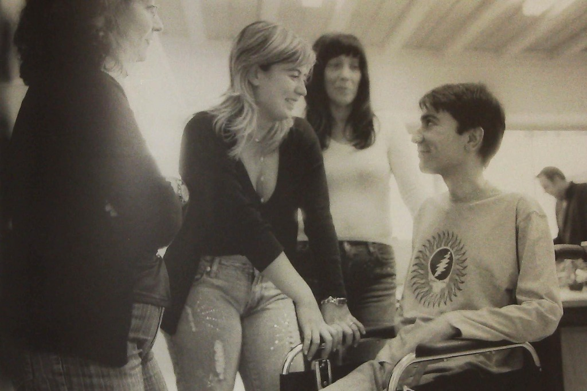
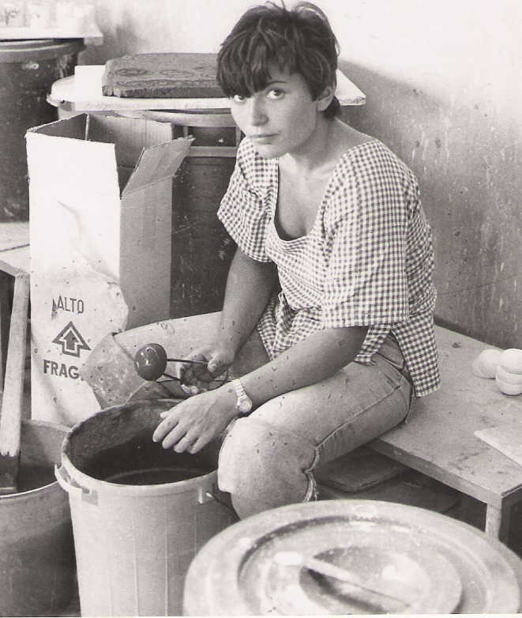
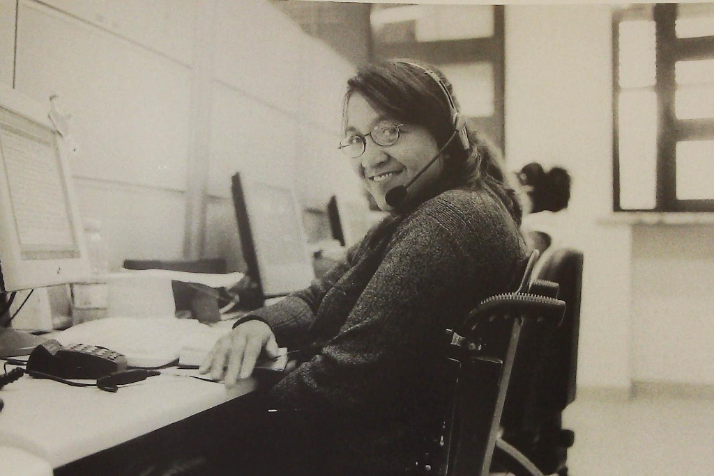
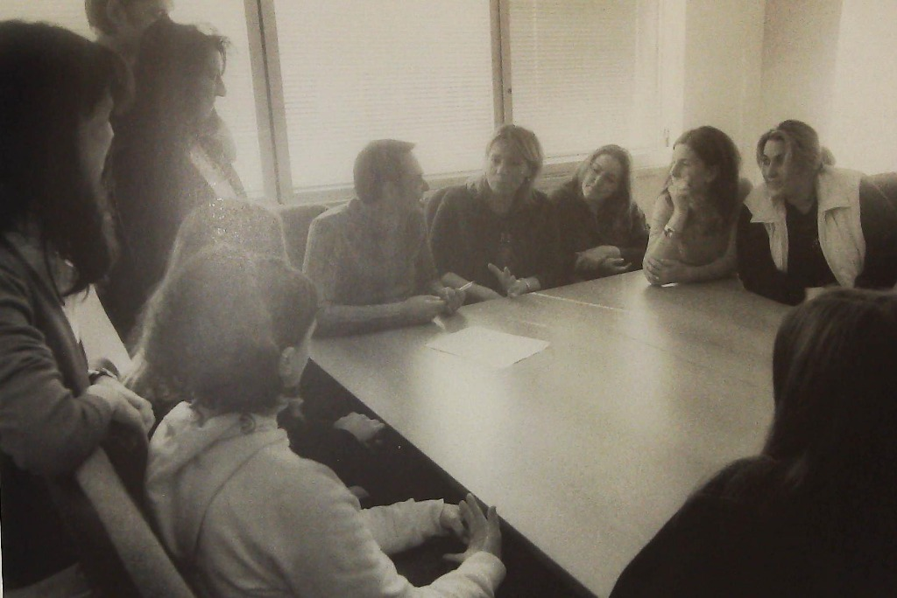

IDENTITÀ E VALORI · FONDAZIONE COINSIEME ETS
Radici nell'inclusione, sguardo nel futuro.
La Fondazione COINSIEME ETS è un Ente del Terzo Settore costituito il 7 novembre 2023 e iscritto al RUNTS. Raccoglie e rinnova un patrimonio di esperienze, competenze e relazioni maturato in oltre quarant'anni di attività nella cooperazione sociale e nella tutela dei diritti delle persone con disabilità, traducendolo oggi in iniziative dedicate all'autonomia, alle tecnologie assistive e all'innovazione sociale.
- Costituita il 7 novembre 2023
- Iscritta al RUNTS dal 2024
LA VISIONE
La persona, le sue scelte, la sua autonomia.
Al centro dell'impegno della Fondazione c'è il riconoscimento pieno della dignità e dell'autodeterminazione di ogni persona. Riteniamo che la condizione di disabilità o di fragilità non debba mai tradursi in dipendenza o isolamento, ma richieda contesti capaci di valorizzare desideri, capacità e progetti di vita.
L'obiettivo istituzionale è promuovere le condizioni concrete affinché le persone e i loro nuclei familiari possano compiere scelte consapevoli, vivere nel proprio ambiente domestico con il supporto di soluzioni tecnologiche adeguate e accedere a una rete integrata di relazioni, servizi e opportunità.
Principio Guida
Costruire contesti capaci di valorizzare desideri, capacità e progetti di vita.

I TRE CARDINI DELL'AZIONE
Autonomia e autodeterminazione
Favorire la permanenza a casa propria, la vita indipendente e la partecipazione attiva alla comunità.
Tecnologia al servizio dell'abitare
Impiegare la domotica e il digitale come strumenti accessibili, orientati a semplificare la quotidianità e aumentare la sicurezza.
Integrazione e reti territoriali
Collaborare con istituzioni, enti del Terzo Settore e comunità locali per favorire risposte coordinate e sostenibili.
STORIA ED ESPERIENZA
Un patrimonio di competenze che si rinnova.
Costituita il 7 novembre 2023 mediante atto di trasformazione dell'Associazione CO.IN. Cooperative Integrate Onlus, la Fondazione rappresenta l'approdo contemporaneo di un percorso storico che ha contribuito allo sviluppo della cooperazione sociale e all'affermazione dei diritti delle persone con disabilità.
Anni '80
La cooperazione sociale e l'integrazione lavorativa
L'esperienza trae origine dal movimento delle cooperative integrate promosso a partire dagli anni Ottanta da CO.IN., realtà pionieristica nei percorsi di inserimento lavorativo e integrazione sociale delle persone con disabilità.

Anni '90 – 2023
Ricerche, accessibilità e servizi nazionali
Nel corso dei decenni, questo percorso ha prodotto ricerche sull'accessibilità urbana e sul turismo per tutti (tra cui le guide storiche alla città di Roma e le indagini per il Dipartimento del Turismo della Presidenza del Consiglio dei Ministri) e ha visto la partecipazione all'ideazione e alla successiva gestione, tramite le cooperative della rete, del servizio di informazione SUPERABILE per conto di INAIL fino a tutto il 2023.

Dal 2023
La scelta della Fondazione ETS
Con la riforma del Terzo Settore e l'iscrizione al RUNTS, la trasformazione in Fondazione è stata deliberata per custodire questo patrimonio storico e dotarlo di uno strumento giuridico solido e autonomo, capace di sviluppare nuove progettualità nell'innovazione tecnologica e sociale.
Le radici del nuovo assetto

Testimonianze documentali
Dalle prime guide storiche all'accessibilità fino alle edizioni odierne sulla memoria sociale del Terzo Settore:
 Guida Roma (1990)
Guida Roma (1990)
 Manuale PCM (1998)
Manuale PCM (1998)
 Don Franco (2026)
Don Franco (2026)
Esplora i volumi e l'archivio storico nella sezione Pubblicazioni
ORGANI E RESPONSABILITÀ
Organi istituzionali e trasparenza.
La Fondazione persegue finalità civiche, solidaristiche e di utilità sociale secondo criteri di legalità, efficacia gestionale e rendicontazione pubblica.
Organo di Governo
Consiglio di Amministrazione
La Fondazione è retta da un Consiglio di Amministrazione che ne guida gli indirizzi strategici e la programmazione delle attività:
- Maurizio Marotta Presidente
- Matteo Amati Consigliere
- Silvana Mazzullo Consigliera
Atti e Rendicontazione
Trasparenza e atti ufficiali
In conformità agli obblighi del Codice del Terzo Settore e ai principi di responsabilità pubblica, la Fondazione rende disponibili e consultabili:
- Statuto della Fondazione COINSIEME ETS
- Comunicazione di iscrizione al RUNTS (2024)
- Bilanci d'esercizio approvati e Bilancio Sociale
- Relazioni dell'Organo di controllo
Consulta tutti i documenti ufficiali nella pagina Trasparenza
AMBITI DI ATTIVITÀ
Linee di lavoro attuali e prospettive in sviluppo.
L'impegno della Fondazione si articola tra le attività operative già attive e le nuove aree di studio e progettazione.
Ciò che facciamo oggi
Interventi, consulenze e attività ordinarie attualmente in corso:
Domotica assistiva e adattamento degli ambienti
Attività di orientamento, analisi dei bisogni e accompagnamento per l'adattamento tecnologico degli spazi domestici attraverso dispositivi smart e sensori su misura, a supporto dell'autonomia di persone con disabilità e anziani.
Pubblicazioni e documentazione sociale
Produzione editoriale e diffusione culturale dedicate alla valorizzazione di memorie storiche, studi ed esperienze nel campo del Terzo Settore e dell'innovazione sociale.
Divulgazione e cultura dell'accessibilità
Attività informative sui temi dell'accessibilità, dei diritti e delle opportunità offerte dalle tecnologie inclusive.
Ciò che stiamo costruendo
Progetti di innovazione, percorsi di orientamento e proposte formative non ancora operative:
Piattaforma digitale COINSIEME (In sviluppo)
Studio e progettazione di un ambiente interattivo dedicato alla persona, finalizzato ad accogliere racconti di bisogni e a favorire percorsi di orientamento personalizzato.
Servizi di orientamento per le famiglie e candidature progettuali (In progettazione)
Definizione di modelli di supporto orientativo e partecipazione a bandi pubblici istituzionali in rete con partner territoriali.
Proposte formative specialistiche (In fase di studio)
Progetti per percorsi formativi dedicati allo sviluppo di nuove competenze per l'abitare accessibile (tra cui il profilo del Manager di Domotica Assistiva), attualmente in fase di studio e non ancora avviati.
Consulta il quadro completo delle attività e dei progetti in Cosa facciamo
PARLIAMOCI
Costruire alleanze e condividere percorsi.
Per approfondire le nostre attività, proporre collaborazioni tra enti e organizzazioni del Terzo Settore o richiedere informazioni istituzionali, puoi scriverci o metterti in contatto con la nostra segreteria.
Accedi ai recapiti e inviaci un messaggio nella pagina Contatti